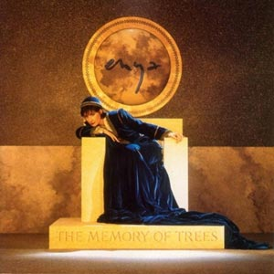

Holidays with Enya
Christmas Secrets
The ultimate compilation

And Winter Came...
A winter-themed album

The Very Best of Enya
The perfect gift
The Memory Of Trees (1995)
The Memory Of Trees, released in 1995, won Enya's first Grammy Award for "Best New Age Album", in 1997.
Its cover art was inspired by a painting called "The Young King of the Black Isles" by Maxfield Parrish, whose work has inspired many of her music videos as well.
As Roma Ryan, Enya's lyricist, remarks in the linear notes of the The Memory Of Trees song for the later colletion Paint The Sky With Stars, "In ancient Celtic belief trees had spirits within them and were considered sacred. They were the keepers of memory and lore. (...) The future we look at may give us another interpretation of the title, with the destruction of the world's rainforests it may turn out to be that the memory of trees is nothing more than that for us - a memory."
Jump to lyrics, videos list, linear notes, awards, charts and credits.
Lyrics list
- The Memory Of Trees (Instrumental)
- Anywhere Is
- Pax Deorum
- Athair Ar Neamh
- From Where I Am (Instrumental)
- China Roses
- Hope Has A Place
- Tea-House Moon (Instrumental)
- Once You Had Gold
- La Soñadora
- On My Way Home
Videos
Lyrics
Anywhere Is lyrics
I walk the maze of moments
but everywhere I turn to
begins a new beginning
but never finds a finish
I walk to the horizon
and there I find another
it all seems so surprising
and then I find that I know
CHORUS:
You go there you're gone forever
I go there I'll lose my way
if we stay here we're not together
Anywhere is
The moon upon the ocean
is swept around in motion
but without ever knowing
the reason for its flowing
in motion on the ocean
the moon still keeps on moving
the waves still keep on waving
and I still keep on going
CHORUS
I wonder if the stars sign
the life that is to be mine
and would they let their light shine
enough for me to follow
I look up to the heavens
but night has clouded over
no spark of constellation
no Vela no Orion
The shells upon the warm sands
have taken from their own lands
the echo of their story
but all I hear are low sounds
as pillow words are weaving
and willow waves are leaving
but should I be believing
that I am only dreaming
CHORUS
To leave the thread of all time
and let it make a dark line
in hopes that I can still find
the way back to the moment
I took the turn and turned to
begin a new beginning
still looking for the answer
I cannot find the finish
It's either this or that way
it's one way or the other
it should be one direction
it could be on reflection
the turn I have just taken
the turn that I was making
I might be just beginning
I might be near the end.
Pax Deorum lyrics
Roma Ryandomineoveniteosacramentum(discesm)eodeo
domineoveniteosacramentum(discesm)eodeo
domineoveniteosacramentum(discesm)eodeo
athairarneamhdialinn..
athairarneamhdialiom
Omnem crede diem tibi diluxisse supremum.
Omnem crede diem tibi diluxisse supremum.
Translation
Peace Of God
Lord/come/Your/Holyness/(say/m)y/God
Lord/come/Your/Holyness/(say/m)y/God
Lord/come/Your/Holyness/(say/m)y/God
Father in Heaven, God bless us..
Father in Heaven, God bless me
Believe that each day which breaks is your last.
Believe that each day which breaks is your last.
Athair Ar Neamh lyrics
Roma RyanAthair ar neamh, Dia linn
Athair ar neamh, Dia liom
M'anam, mo chroí, mo ghlóir
Moladh duit a Dhia.
Fada an lá, go sámh
Fada an oíche, gan gruaim
Aoibhneas, áthas, grá
Moladh duit a Dhia.
Móraim thú, ó lá go lá
Móraim thú, ó oíche go hoíche.
Athair ar neamh, Dia linn
Athair ar neamh, Dia liom
An ghealach, an ghriain, an ghaoth
Moladh duit a Dhia.
Translation
Father in Heaven
Father in Heaven, God help us.
Father in Heaven, God help me.
My soul, my heart, my voice
praise to you, oh God.
Long is the day, and peaceful,
long is the night without gloom,
happiness, joy, love,
praise to you, oh God.
I praise you from day to day.
I praise you night after night.
Father in Heaven, God help us.
Father in Heaven, God help me.
The moon, the sun, the wind,
praise be to you, oh God.
China Roses lyrics
Roma RyanWho can tell me if we have heaven,
who can say the way it should be;
Moonlight holly, the Sappho Comet,
Angel's tears below a tree.
You talk of the break of morning
as you view the new aurora,
Cloud in crimson, the key of heaven,
one love carved in acajou.
One told me of China Roses,
One a Thousand nights and one night,
Earth's last picture, the end of evening:
hue of indigo and blue.
A new moon leads me to
woods of dreams and I follow.
A new world waits for me;
my dream, my way.
I know that if I have heaven
there is nothing to desire.
Rain and river, a world of wonder
may be paradise to me.
I see the sun...
I see the stars...
Hope Has A Place lyrics
Roma RyanOne look at love and you may see
it weaves a web over mystery,
all ravelled threads can rend apart
for hope has a place in the lover's heart.
Hope has a place in a lover's heart.
Whispering world, a sigh of sighs,
The ebb and the flow of the ocean tides.
One breath, one word may end or may start
a hope in a place of the lover's heart.
Hope has a place in a lover's heart.
Look to love you may dream,
and if it should leave then give it wings.
But if such a love is meant to be;
Hope is home, and the heart is free
Under the heavens we journey far,
on roads of life we're the wanderers,
So let love rise, so let love depart,
Let hope have a place in the lover's heart.
Hope has a place in a lover's heart.
Look to love and you may dream,
and if it should leave then give it wings.
But if such a love is meant to be;
Hope is home, and the heart is free.
Hope is home, and the heart is free.
Once You Had Gold lyrics
Roma RyanOnce you had gold,
Once you had silver,
Then came the rains
out of the blue.
Ever and always.
Always and ever.
Time gave both darkness and dreams to you.
Now you can see
Spring becomes autumn,
leaves become gold
falling from view.
Ever and always.
Always and ever.
No-one can promise a dream come true,
Time gave both darkness and dreams to you.
What is the dark;
shadows around you,
why not take heart
in the new day?
Ever and always.
Always and ever.
No-one can promise a dream for you,
Time gave both darkness and dreams to you.
La Soñadora lyrics
Roma RyanYo; el otoño
Yo; el vespero
He sido un eco.
Seré una ola
Seré la luna
He sido todo, soy yo.
Yo; el verano
Yo; el ébano
Soy la soñadora.
Translation
The Dreamer
I; the autumn
I; the evening star
I have been an echo
I shall be a wave
I shall be the moon
I have been everything, I am myself
I; the summer
I; the ebony
I am the dreamer
On My Way Home lyrics
Roma RyanI have been given one moment from heaven
as I am walking surrounded by night,
Stars high above me
make a wish under moonlight.
On my way home
I remember only good days.
I'm on my way home
I can remember every new day.
I move in silence with each step taken,
snow falling 'round me like angels in flight,
Far in the distance
is my wish under moonlight.
On my way home
I remember only good days.
On my way home
I remember all the best days.
I'm on my way home
I can remember every new day.
Turn it up, turn it up, turn it up, up, up, adieu.
Turn it up, turn it up, turn it up, up, up, adieu.
On my way home
I remember only good days.
On my way home
I remember only good days.
Linear notes
Anywhere Is
The land of the summer stars... the winter garden...that way...the land of paradoxes...the city of angels...aigle... anywhere is...roma...the island of ebony....
persia...the island of the four precious walls...the willows on the water... the land of three winters...ole inigo...thoraigh... wood of dreams...the plain of the winds...
anywhere is...gaothdobhair...this way... a whispering world...orinoco... lothlorien....the palace of solitude.... the garden of the singing-ringing tree...
the land of illusion...cuyahoga... the painted ball...the crystal sea... lake disappointment....aldebaran...life... my way home...anywhere is...
Pax Deorum
Pax Deorum translates as "Peace of the Gods" [Enya Lyrics note: the correct is "Peace of God". Peace of the Gods may be "Pax Deorim"]. This Goodwill of God expressed accord between ancient Rome and her Gods, maintaining a harmonious relationship between Man and Divinity. This concept, and variations of it, are echoed throughout history in other ages and cultures.
Athair Ar Neamh
...the voice of epiphany is found in Athair ar Neamh. It is the voice of day, the voice of night, the voice of all, of understanding.
It is a peace which is unique to the individual, a peace that is felt rather than described. It is that moment in which we experience a sense of calm and understanding amidst the bustle and hustle of everyday living, and although it is a brief encounter, it is complete.
China Roses
Everyone has their own idea of heaven. What creates the beauty of the world is the love we have for it, connected to memories, wishes, desires. For each of us it is a different treasure we embrace - a changing sky, the crimson flower of the Keys of Heaven, a love token, the endless delight of fairy-tales, the ever-shifting pictures of our world that we find in the words of poets. For each one of us a different love becomes our own woo of dreams.
Denique non omnes eadem mirantur amantque: All men, in short, do not admire and love the same things.
Hope Has A Place
Hope has a place in the lover's heart.
If love was always kind there would be no need to worry for those who begin this journey. On Love or the loss of it, no amount of advice or reason can ultimately protect the one who loves from pain or from the disappointment of loss. We hurt so much because we love so much.
This is a wish that love may be kind, and if it should not be, that the one precious feeling held captive in Pandora's box may find it's place in the lover's heart.
Tea-House Moon
It has been told that the path to the tea-house was one of a copse of summer trees, a wave of the sea, the pale evening moon. The trees, the sea, the moon evoked old dreams and the tea-house represented an oasis where the traveller could find peace. On entering through the low door, one could hear the song of water echo the distant sea or the sound of the rain in a bamboo forest. The tea-house was a place of repose and one in which the harmony of nature pervaded.
Once You Had Gold
For some it will be the memory of darkness and their journey thought it. Looking back to the walk though winter into vernal days. Knowing that all things must pass; both good and bad.
For others it is the mother reassuring her child. The ways of the world hold both darkness and dreams. Every day has it's ending and every night it's new dawn. And, although Summer sheds to winter, days will once again become bright.
Others will see the path which took them from one understanding to another; once in which they realised that which was most precious to them.
La Sonadora
From the mythologies of our origins to the dreams of Borges and beyond. From probable to the abstract, from the one to the many, from the dreamer to the bedreamed.
In Irish Mythology there is often mention of the Druid; The Druid was regarded as a man of knowledge and power. He held the knowledge in dreams and signs an interpretation. He knew the lie of lands and the way of the winds. He understood the elements. His was the knowledge of words. One Druid in particular inspired the seed to this lyric; Amergin, who came from the shores of Iberia, modern-day Spain, with the Son of Mil.
And so the Dreamer dreams.
On My Way Home
The journey home. A clear, fresh evening, quiet, restful. Thoughts are comforting, memories are warm and sweet. The air is so still reflection comes easy. A gentle snow may cocoon us and can deaden the night sounds, The mind can dwell on the good things in life as, with each step, one joyful thought begets another. The journey home is filled with the anticipation and excitement of arrival - family, friends, those we love. The solitary path has more room for wishes, in that stillness, in that night, going home.
Awards
Grammy Awards| Year | Winner | Category |
|---|---|---|
| 1997 | The Memory of Trees | Best New Age Album |
Charts
Album| Country | Peak position | Certification | Sales |
|---|---|---|---|
| Australia | 1 | 4x Platinum | 280,000 |
| Austria | 3 | Platinum | 30,000+ |
| Brazil | Platinum | 250,000+ | |
| Canada | Platinum | 100,000+ | |
| Finland | 11 | Gold | 21,714+ |
| France | Gold | 100,000+ | |
| Germany | Gold | 100,000+ | |
| Netherlands | Platinum | 80,000+ | |
| New Zealand | 3 | ||
| Norway | 1 | ||
| Poland | Gold | 20,000+ | |
| Spain | 1 | ||
| Sweden | 1 | Platinum | 100,000+ |
| Switzerland | 3 | ||
| United Kingdom | 5 | 2x Platinum | 600,000+ |
| United States | 9 | 3x Platinum | 3,400,000+ (66 weeks) |
Credits
Produced by Nicky Ryan
All instruments and voices by Enya
Music composed by Enya
Lyrics by Roma Ryan
Arranged by Enya and Nicky Ryan
Engineered and mixed by Nicky Ryan
Executive producer Rob Dickins
Recorded at Aigle Studios
Mastered by Arun
All tracks published by EMI Songs Ltd
Sleeve photography inspired by Maxfield Parrish
Costume design by Elizabeth Emanuel
Sleeve Layout by Sooky
Ba dheacair d�inne an t-albam seo a shamhl� gan focla spreagtha sin Rob Dickins. (It would be difficult for us to imagine this album without those inspiring/encouraging words of Rob Dickins.)
Return to top